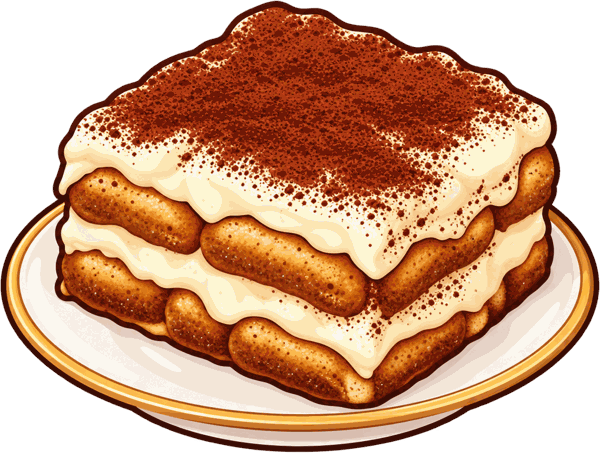

Todas las recetas › Venezia
Ciudad del viaje: Venezia
Tiramisù
Nació en el Véneto, en Treviso, en los años 60–70, aunque el Friul reclama su paternidad.
Raciones6
Preparación30 min
Reposo4 h
DificultadFácil
Alérgenos: Huevos, Leche, Gluten

Guardar en PinterestIngredientes
- Mascarpone · 500 g
- Huevos pasteurizados · 4
- Azúcar · 100 g
- Savoiardi (soletillas) · 300 g
- Café expreso frío · 300 ml
- Cacao amargo en polvo · al gusto
Paso a paso
- Separa las yemas de las claras.
- Bate las yemas con el azúcar hasta que estén pálidas y esponjosas, luego añade el mascarpone y mézclalo hasta lograr una crema lisa.
- Monta las claras a punto de nieve firme e incorpóralas a la crema con suavidad, de abajo hacia arriba.
- Moja rápidamente los savoiardi en el café y colócalos en una fuente.
- Alterna capas de savoiardi y crema, terminando con la crema.
- Tapa y deja en la nevera al menos 4 horas. Antes de servir, espolvorea con cacao.
El consejo del chef. Los huevos van crudos: usa siempre huevos pasteurizados, sobre todo si lo sirves a niños, ancianos o mujeres embarazadas.
Cocina esta receta también en Tavolata
En el juego combinas ingredientes, completas pedidos y restauras ciudades italianas, de Firenze a Milano. Gratis, con recetas auténticas en el Recetario.
Descargar en el App Store